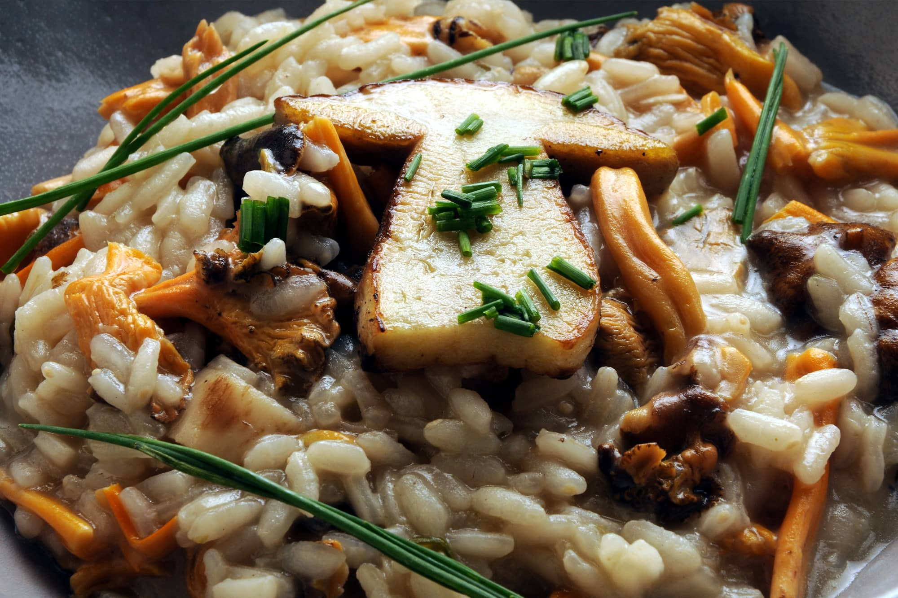
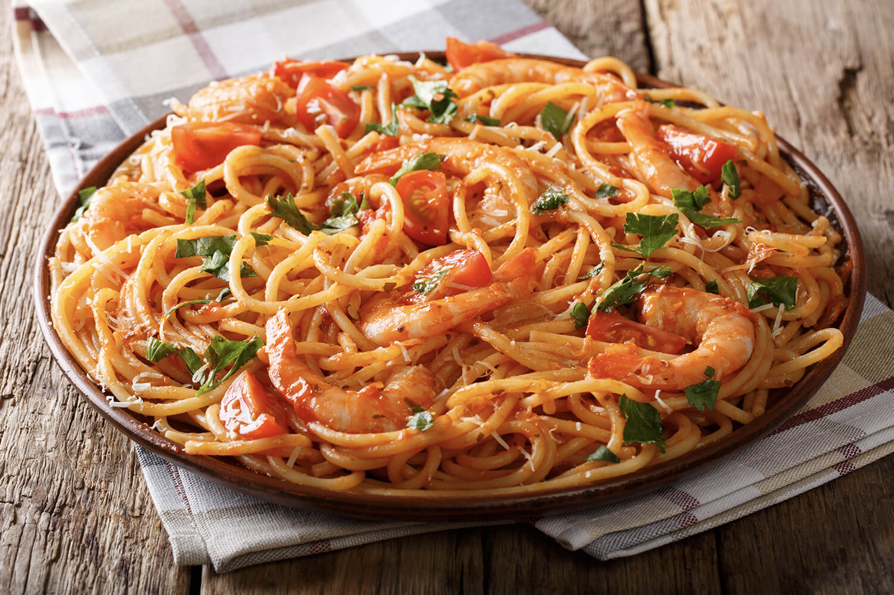
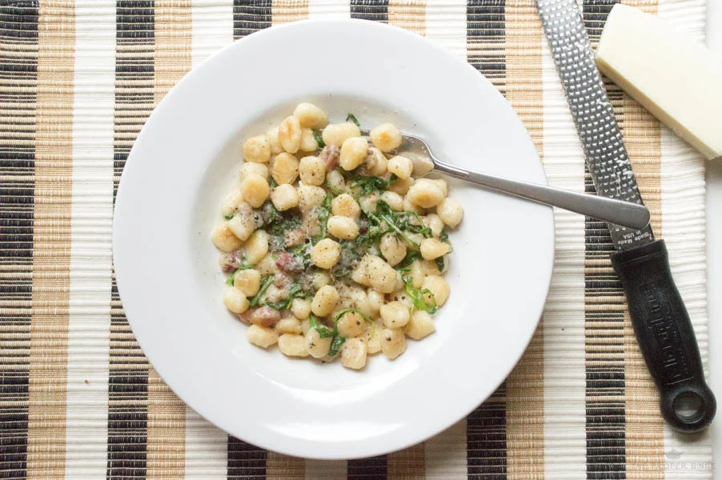
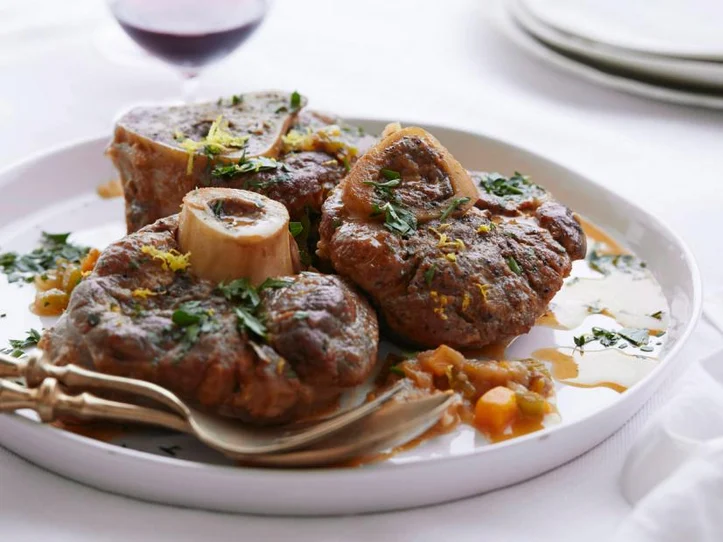
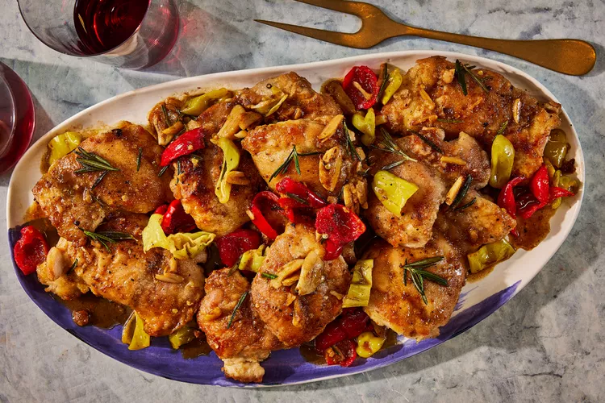

Do clássico ao contemporâneo, uma viagem culinária pela Itália.
Ambiente Climatizado
Ambiente climatizado para o conforto de quem for comer
Música Agradavel
Musica ambiente com volume confortavel para seus ouvidos
Alimento de boa qualidade
Alimento feito com amor e carinho para você e sua familia

Serviço exepcional
Aproveite do ótimo serviço e atenção dos garçons que possuem enorme experiência na profissão
Ambiente
Reserve jáNossos Pratos
-

Risotto
Uma verdadeira obra-prima da culinária italiana, nosso risotto é preparado com arroz arbóreo ou carnaroli, lentamente cozido com vinho branco e caldo aromático. Cremoso e cheio de sabor, ele pode ser combinado com ingredientes frescos como cogumelos, frutos do mar ou legumes da estação. Cada colherada é uma experiência que celebra a autenticidade e o cuidado da gastronomia italiana.
-

Rag de Laranja com Polenta Cremosa
é tradicionalmente qualquer molho à base de carne servido sobre macarrão ou, neste caso, polenta. Não, o trapo não é o mesmo que Molho bolonhês. A principal diferença é que o trapo é mais grosso. Mas nós divagamos. Rag Peru embalado sobre polenta cremosa resulta em um prato incrivelmente reconfortante que é o precursor perfeito para algum tempo de qualidade com um ente querido.
-

Fra Diavolo
o molho dá vida a qualquer refeição que toque, desde frutos do mar a bife, massas e muito mais. Gleaning muito de seu sabor do azeite, alho e orégano, fra diavolo molho é elevado pelo uso pesado de pimentões ou flocos de pimenta vermelha. Nós amamos o calor infame do molho Fra Diavolo servido sobre espaguete ou linguine, com muito camarão macio e salgado.
-

Gnocchi Cacio e Pepe
o incomparável queijo italiano e molho de pimenta (tecnicamente não é um molho, mas thatilits OK). Este prato vem junto em literalmente 10 minutos, perfeito para quando você e seu parceiro querem comer bem, mas você quer que ele leve uma eternidade.
-

Vitela Osso Buco
O Vitelo Osso Buco, um clássico da região da Lombardia, é preparado com canas de vitela cozidas lentamente em vinho, caldo e vegetais como cenouras, aipo e cebolas, resultando em uma carne incrivelmente macia e sabor delicado. Seu nome, que significa "osso com um buraco," faz referência à medula óssea presente, considerada uma verdadeira iguaria.
-

Frango Scarpariello
Scarpariello tradicional — sauté de frango em um esmalte de limão picante com pimentão — é tipicamente feito com um frango inteiro cortado em pedaços, depois cozido no fogão por horas. Para acelerar as coisas, optamos por coxas desossadas de cozimento mais rápido e pulamos o pimentão em favor de Peppadews jarred, uma pimenta em conserva doce e picante.